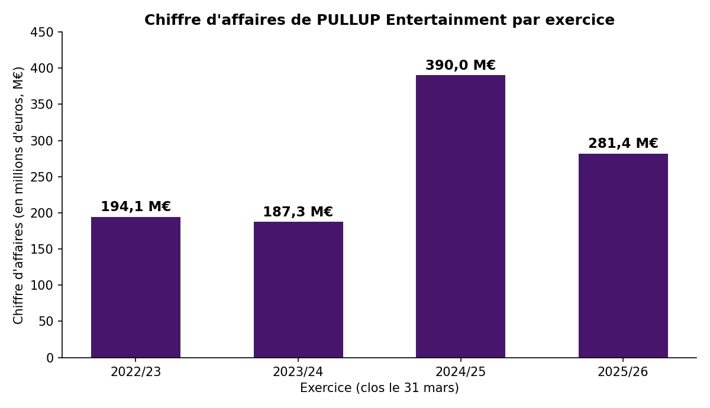
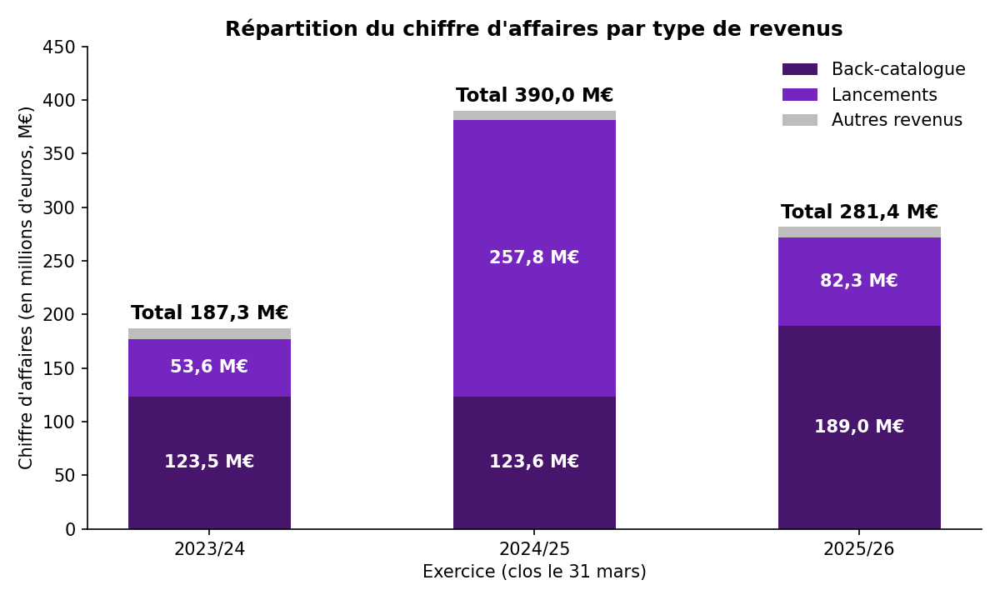
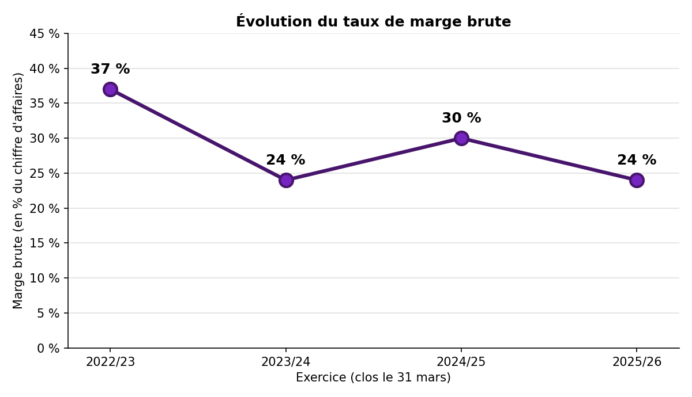

Une activité qui dépend des lancements
Notre chiffre d'affaires évolue au rythme de nos grandes sorties. En 2024/25, il a atteint 390,0 M€, soit un niveau historique, porté par le lancement de Warhammer 40,000 : Space Marine 2. En 2025/26, aucune sortie de cette ampleur n'a eu lieu : il s'établit à 281,4 M€, soit 27,8 % de moins, mais il reste supérieur à celui de 2022/23 (194,1 M€) et de 2023/24 (187,3 M€).

Le back-catalogue, notre socle récurrent
Nous tirons nos revenus de deux sources : les lancements (jeux sortis dans l'exercice) et le back-catalogue (jeux sortis auparavant, contenus additionnels et jeux en ligne). Le back-catalogue est plus stable car il ne dépend pas d'une date de sortie. Il est passé de 123,6 M€ en 2024/25 à 189,0 M€ en 2025/26 (+52,9 %), un record qui compense en partie la baisse des lancements, tombés à 82,3 M€.

Rentabilité et perspectives
Quand les lancements reculent, notre rentabilité en subit directement les effets. En 2025/26, notre EBIT ajusté est de 12,6 M€ contre 60,3 M€ un an plus tôt, et notre marge brute représente 24 % du chiffre d'affaires, contre 30 % en 2024/25. Nous avons terminé l'exercice sur une perte nette. Notre dette nette reste maîtrisée, à 85,7 M€ au 31 mars 2026.
Nous poursuivons notre transformation vers une activité plus récurrente, répartie sur davantage de titres, et préparons plus de dix lancements. Le premier trimestre 2026/27 confirme cette orientation : nous avons réalisé 44,4 M€ de chiffre d'affaires, portés par le back-catalogue. Nous restons toutefois exposés à la réussite commerciale de chaque nouvelle sortie.

Sources : communiqués financiers de PULLUP Entertainment sur actusnews.com (résultats annuels 2023/24, chiffre d'affaires annuel 2024/25, chiffre d'affaires du 4e trimestre et résultats annuels 2025/26, chiffre d'affaires du 1er trimestre 2026/27).